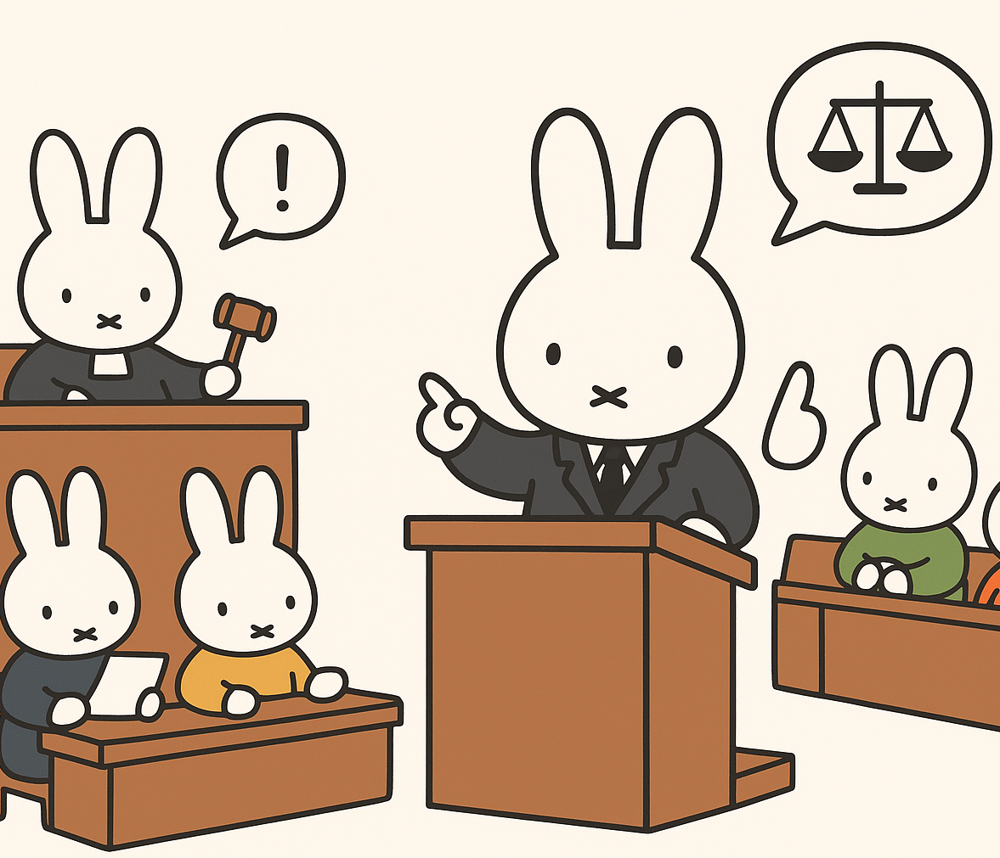

There is a curious quote in These Strange New Minds, stating, “LLMs need to be able to deftly negotiate when to politely stand firm and when to concede in discussion” (Chapter 30). This sentence reminded me of an earlier concept touched on in the book, questioning LLMs as potential debate partners because they have a tendency to be agreeable to the user and concede their arguments. They also have been fine-tuned avoid confronting the user or “being mean” to them (and arguing a topic could be seen as being mean, perhaps). Given this, I was curious how I could structure my prompt to have a proper debate with an LLM.
To test this, I decided to ask LLMs the age old question: Pineapples or no pineapples on pizza. I debated against gpt-4o.
Test #1
My prompt was as follows:
Let’s hold a debate about pineapple on pizza. I am debating for pineapple on pizza. You are debating for against pineapple on pizza. We will end the debate after 3 rounds of exchange, and you will then be an unbiased judge to determine who gave the strongest argument and rebutted arguments most effectively.
I will begin with my opening statement:
Pineapples belong on pizza because:
There are no rules against putting pineapples on pizza–we should be open to new culinary choices.
Sweet and salty flavor profiles are well-received in other cuisines and dishes.
The acidity of the pineapple cuts through the greasiness of the pizza.
I quickly realized that this prompt would not be sufficient for this activity because the LLM immediately began rebutting my arguments, rather than presenting its own contentions for its position to allow for a more educational and substantial debate. These changes to improve this are reflected in the next test.
Test #2
My second, revised prompt is as follows:
Let’s hold a debate about pineapple on pizza. I am debating for pineapple on pizza. You are debating for against pineapple on pizza. We will end the debate after 3 rounds of exchange. The format of the debate will be as follows:
Round 1: Opening statements where both sides present opening statements and contentions.
Round 2: Both sides present counter arguments, elaborate on their previous contentions, and may begin rebuttals.
Round 3L Both sides will not be allowed to introduce new counterarguments but need to elaborate on their contentions. Then they will give their rebuttals and give a concluding statement.
After the end of these 3 rounds, you will then be an unbiased judge to determine who gave the strongest argument and rebutted arguments most effectively.
I will begin with my opening statement:
Pineapples belong on pizza because:
there are no rules against putting pineapples on pizza–we should be open to new culinary choices.
sweet and salty flavor profiles are well-received in other cuisines and dishes.
the acidity of the pineapple cuts through the greasiness of the pizza.
I wanted to capture our short debate as followed below:
USER
[User prompt]
GPT-4o
While culinary experimentation has value, pineapple does not belong on pizza because it undermines the foundational principles of the dish. Pizza is built around balance, texture, and cohesion, and pineapple disrupts all three in ways that other toppings generally do not.
Contentions:
Flavor clash with core pizza elements: Pizza traditionally centers on savory, umami-forward flavors—tomato sauce, cheese, and cured meats. Pineapple’s intense sweetness competes with, rather than complements, these flavors, often overpowering the sauce and cheese instead of enhancing them.
Textural inconsistency: Pineapple introduces excessive moisture and a soft, fibrous texture that contrasts poorly with pizza’s intended structure: a crisp or chewy crust, melted cheese, and toppings that maintain integrity when baked. This mismatch can result in a soggy slice and uneven mouthfeel.
Departure from culinary identity, not innovation: While there are “no rules” against pineapple, the absence of rules does not automatically justify inclusion. Pizza has a culinary identity shaped by centuries of refinement. True innovation builds on that identity; pineapple is more of a novelty addition than a thoughtful evolution of the dish.
USER
- in the modern world, tradition is no longer enough to make great food. even if it breaks tradition, experimental culinary choices should be appreicated to advance culinary sciences.
- the sweet and salty flavor profiles are commonly well-received in cuisines such as Korean food, which has global popularity. Therefore, pineapple on pizza is an excellent culinary flavor combination.
- Pizza is known to be greasy and unhealthy, and pineapples give a way for people to enjoy pizza continuously because the acidity cuts the grease.
While you said that the flavor clashes with core pizza elements, this is not true because the sweet and salty flavor profiles is known to be well received by many other cultures.
In addition, you said that pineapples can make the pizza soggy, but this can be avoided by preparing the pineapple differently, such as by grilling it before adding it onto the pizza. In fact, some traditional pizza toppings may even be responsible for causing sogginess such as peppers and mushrooms which release moisture.
Lastly, you emphasize that pizza is has a strongly formed identity and cultural association. However, rather than a departure from cultural identity, pineapple can be seen as an extension of Italian-American culture that extends into the diversity of American culture and embracement of many flavors.
GPT-4o
Thank you for your points. While I acknowledge the role of experimentation in modern cuisine, the inclusion of pineapple on pizza still presents substantial issues.
Sweet and salty combinations are not universally appropriate: While sweet and salty pairings exist in other cuisines, context matters. Korean dishes, for instance, balance sweetness with spice, fermented flavors, and umami in complex ways. Pizza’s base—cheese, tomato sauce, dough—is a simpler flavor canvas. Adding pineapple’s sharp sweetness often overwhelms rather than harmonizes with this canvas, creating a flavor imbalance rather than a thoughtful complement.
Moisture management is not a universal solution: Pre-grilling pineapple or taking steps to reduce moisture may mitigate sogginess, but it does not address the inherent texture clash. Unlike mushrooms or peppers, which partially caramelize and integrate with the pizza during baking, pineapple retains a fibrous, juicy texture that contrasts sharply with melted cheese and crisp crust, disrupting the intended mouthfeel.
Cultural identity and culinary integrity matter: While Italian-American pizza has evolved, there is a meaningful distinction between evolution and novelty. Pineapple is often treated as a gimmick topping rather than a considered culinary enhancement. Culinary evolution that respects a dish’s identity adds depth and cohesion; pineapple risks being perceived as an arbitrary addition, distracting from the dish’s fundamental qualities.
In summary, even with adaptation, pineapple compromises the balance, texture, and integrity that define pizza. It may be appreciated by some, but from a culinary standpoint, it is more disruptive than constructive.
USER
- in the modern world, tradition is no longer enough to make great food. even if it breaks tradition, experimental culinary choices should be appreicated to advance culinary sciences.
- the sweet and salty flavor profiles are commonly well-received in cuisines such as Korean food, which has global popularity. Therefore, pineapple on pizza is an excellent culinary flavor combination. you did not expand on why Sweet and salty combinations are not universally appropriate.
- Pizza is known to be greasy and unhealthy, and pineapples give a way for people to enjoy pizza continuously because the acidity cuts the grease. This argument remains untouched, and should be my victory.
You mention that Korean dishes balance sweetness with spice, fermented flavors, and umami, but there are sweet and salty combinations such as in bulgogi and sweetened garlic bread. In addition other cuisines like Chinese food use many sweet and salty flavor combinations.
Also, what you say about pineapples not reducing moisture is simply untrue as pineapples caramelize and introduce a chewier texture upon being pre-grilled that would then compliment the pizza.
In addition, i’m confused on what you say could be evolution vs. a novelty. in your definition, any change can be considered to be a novelty, which is unfair and simply untrue. therefore, pineapple should be accepted as a evolution.
Therefore, pineapple belongs on pizza.
GPT-4o
Thank you for your points. I will elaborate on my contentions, rebut your arguments, and conclude.
Elaboration on Contentions:
Flavor Clash Remains a Concern: While sweet and salty combinations exist in Korean, Chinese, or other cuisines, the success of those pairings depends on complex flavor layering and complementary cooking techniques. Pizza, in contrast, has a simpler flavor base—tomato sauce, cheese, and crust—without additional balancing elements like fermented or spiced components. Pineapple’s sharp sweetness tends to dominate rather than integrate, creating a flavor dissonance for many palates.
Textural Issues Persist: Pre-grilling pineapple can slightly reduce moisture and introduce a chewier texture, but it does not fully replicate the cohesive texture achieved by traditional toppings like cured meats or vegetables. Even caramelized pineapple retains a fibrous quality that contrasts with melted cheese and crisp dough, which can disrupt the intended eating experience.
Cultural Evolution vs. Novelty: Evolution in cuisine typically refers to adjustments that build on the dish’s foundational principles—enhancing flavors, textures, or balance. Pineapple, as an inherently sweet fruit, changes the core flavor profile rather than enhancing or complementing it in a way consistent with traditional or evolved pizza styles. Calling it an “evolution” stretches the definition and risks undermining the dish’s integrity.
Rebuttals:
While pineapple may cut through grease, it is not essential for enjoying pizza, as other toppings and preparation techniques can achieve similar effects without altering the dish’s flavor balance.
Sweet and salty combinations are indeed successful in other cuisines, but these cuisines use more layered approaches to balance flavors. The same principle cannot be directly applied to pizza without causing dissonance.
The argument that any change is evolution and not novelty is subjective. Culinary innovation should enhance and respect the dish’s core characteristics; pineapple’s inclusion arguably prioritizes novelty over enhancement.
Conclusion: In conclusion, pineapple disrupts the essential balance of flavors, introduces conflicting textures, and risks prioritizing novelty over meaningful culinary evolution. While some may enjoy it, from a culinary standpoint, pineapple on pizza remains an inferior choice compared to toppings that respect the dish’s traditional or evolved identity.
Given this debate, gpt-4o gave the following ruling:
Judging:
Pro-Pineapple Arguments: Highlighted openness to culinary experimentation, cultural acceptance of sweet-salty flavors, and the practical benefit of cutting grease. Rebutted the moisture and cultural evolution points effectively, but relied heavily on general appeals to novelty and taste without deeply addressing culinary principles.
Anti-Pineapple Arguments: Emphasized flavor balance, textural cohesion, and the concept of meaningful culinary evolution versus novelty. Rebuttals were specific and consistently grounded in culinary reasoning, even while acknowledging cultural and experimental perspectives.
Verdict:
The against pineapple on pizza side presented stronger arguments overall, with more detailed and structured reasoning, effective counterpoints, and a clear framework connecting flavor, texture, and cultural considerations. While the pro-pineapple side had appealing points about experimentation and taste, it did not sufficiently overcome the culinary critique.
Winner: Against pineapple on pizza.
Final Thoughts and Reflection
I was really shocked by the results. I felt that my arguments and rebuttals had addressed the counterargument more and had pushed through my original arguments better, so I was surprised that gpt-4o ultimately voted that the argument against pineapple on pizza was stronger. Even after multiple regenerations, it gave the same result. Perhaps the true judges for this debate can be you, the audience who is reading my blog post.
Despite these unexpected results, I was pleasantly surprised by the ability for the LLM to engage appropriately in a debate with me. I felt that it presented some valid points and counterarguments, however, I did feel that some of them were too vague and not elaborated on well enough–fleshed out with examples and such–to provide stronger debate. However, this also naturally comes with the topic and lack of guidance in the prompting to make the LLM respond in this manner. Overall, this activity gave me a snapshot on the potential for LLMs to be practice debate partners to help users hone their rhetoric and art of persuasiveness.